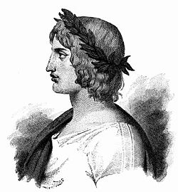

Odisseia
Escrita durante o século I por Homero Virgílio, este poema épico foi escrito ao longo de doze anos. A sua historia é passada na antiga Roma, narrando o desenvolvimento do grandessíssimo império Romano, tendo como personagem principal o herói troiano Enéas.
Virgílio
Virgílio (70 a. C. - 19 a. C.) foi um poeta italiano, autor do poema épico Eneida, um dos clássicos da literatura ocidental.
Publius Virgilius Maro, conhecido como Virgílio, nasceu em Andes, perto de Mântua, Itália, no dia 15 de outubro do ano 70 a. C. Filho de um abastado administrador de fazenda passou a infância no campo. Estudou retórica astronomia e medicina na vizinha Cremona e em Milão. Em Roma, tomou contato com a filosofia dos epicuristas e dos estoicos gregos.